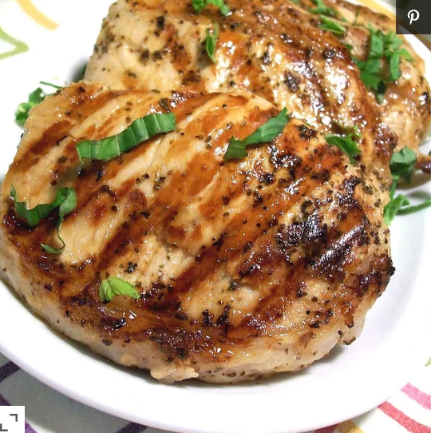

Chesapeake Bay Pork Chops

Grilled Pork Chops with a kick!
Seafood seasoning is used to make a marinade that gives these grilled pork chops the delicious flavor of the Chesapeake Bay. More seafood seasoning can be sprinkled on at grill time to provide an extra kick.
Ingredients
- ½ cup vegetable oil
- ½ cup apple cider vinegar
- 1 tablespoon seafood seasoning (such as Old Bay®)
- 2 cloves minced garlic
- 1 tablespoon chopped fresh basil
- 1 lime, juiced
- cracked black pepper to taste
- 8 boneless pork chops, 1/2 inch thick
Directions
- Whisk together the vegetable oil, apple cider vinegar, seafood seasoning, minced garlic, basil, lime juice, and black pepper in a bowl, and pour into a resealable plastic bag. Add the pork chops, coat with the marinade, squeeze out excess air, and seal the bag. Marinate in the refrigerator for 4 to 6 hours, flipping periodically.
- Preheat an outdoor grill for medium-high heat, and lightly oil the grate. Remove the pork chops from the bags. Discard excess marinade.
- Grill until the pork is no longer pink in the center, 5 to 7 minutes per side. An instant-read thermometer inserted into the center should read 145 degrees F (63 degrees C).